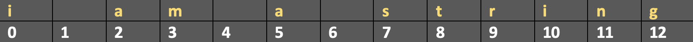

Data Types#
Learning Objectives
Questions
What kind of data types exist in Python?
What are the key differences between the data types?
Objectives
Understand the essential data types in Python
Explain what a string is, and what you can do with it
Explain the differences between integers and floats
Explain what a boolean is, and how to use comparisons
There are four essential kinds of Python data with different powers and capabilities:
Strings (Text)
Integers (Whole Numbers)
Floats (Decimal Numbers)
Booleans (True/False)
Take a look at the two examples below. What differences do you notice?
'Here is a some text'
42
You might be wondering…
Why is ‘Here is some text’ surrounded by quotation marks while 42 is not?
Because these are two different “types” of Python data. We will look closer at the different types below.
Data Type |
Explanation |
Example |
|---|---|---|
String |
Text |
'Anything goes 4 strings!' |
Integer |
Whole Numbers |
42 |
Float |
Decimal Numbers |
3.1415926 |
Boolean |
True/False |
False |
Note, that many Python editors and environments (such as Juptyter Lab etc.) will colour the output based on data type. E.g. in Jupyter Lab strings will be in red and integers in green like this:
'Here is a some text'
42
Check Data Types#
You can check the data type of any value by using the function type().
type('Here is some text')
str
The output str is short for string.
type(42)
int
The output int is short for integer.
Strings#
A string is a Python data type that is treated like text, even if it contains a number. Strings are always enclosed by either single quotation marks 'this is a string' or double quotation marks "this is also a string".
'this is a string'
"this is also a string, even though it contains a number like 42"
this is not a string
It doesn’t matter whether you use single or double quotation marks with strings, as long as you use the same kind on either side of the string.
Tip
How can you have quotation marks inside a string?
Escape characters
Escape characters and how to tell Python to igonre special meanings. This can be handy if you need to make quotation marks inside a string. This can be done in two ways.
Use the opposite kind of quotation mark inside the string:
"She exclaimed, 'This is a quotation inside a string!'"
Or “escape” the quotation mark by using a backslash \ before it:
"She exclaimed, \"This is also a quotation inside a string!\""
String Methods#
Each data type has different properties and capabilities. So there are special things that only strings can do, and there are special ways of interacting with strings.
For example, you can index and slice strings, you can append strings together.
Here are a few examples:
Index#
Often in programming languages, individual items in an ordered set of data, can be accessed directly using a numeric index or key value. This process is referred to as indexing.
In Python, strings are ordered sequences of character data, and thus can be indexed in this way. Individual characters in a string can be accessed by specifying the string name followed by a number in square brackets [].
String indexing in Python is zero-based: the first character in the string has index 0, the next has index 1, and so on. The index of the last character will be the length of the string minus one. It can be illustrated like this:

The individual characters can be accessed by index:
'I am a string'[0]
'I'
'I am a string'[7]
's'
Slice#
Python allows a form of indexing syntax that extracts substrings from a string, known as string slicing.
If s is a string, an expression of the form s[start:stop] returns the portion of s starting with position start, and up to but not including position stop:
'I am a string'[0:8]
'I am a s'
Concatenation#
The + operator concatenates strings. It returns a string consisting of the operands joined together, as shown here:
'I am a string' + ' and so am I'
'I am a string and so am I'
Notice that we have added a space in the beginning of the second string, otherwise there would be no space between ‘string’ and ‘and’. You can also add a space between two strings like this:
'I am a string' + ' ' + 'and so am I'
'I am a string and so am I'
Integers & Floats#
An integer and a float are two Python data types for representing numbers.
Integers represent whole numbers.
Floats represent numbers with decimal points.
Integers and floats do not need to be placed in quotation marks.
type(42)
int
type(3.1415926)
float
Mathematical operations#
You can do a large range of mathematical calculations and operations with integers and floats. Here are a few examples, for an extended overview you can fold out a table at the end of this section.
Multiplication#
You can multiply in Python using the * operator:
4 * 2
8
Exponents#
You can use ** as the exponent operator. An exponent is an expression of the number of times a number is muliplied by itself.
4 ** 2
16
Modulus#
The modulus or remainder operator looks like this: a % b.
However, it does not work as a percentage although it might look like one. Instead it divides a with b and the remainder is returned.
72 % 10
2
More mathematical operators#
These are just a few of the mathmathical operations in Python - see the table below from Python’s documentation about Built-in Types.
Click here to see more mathematical operators
Operation |
Explanation |
|---|---|
|
sum of |
|
difference of |
|
product of |
|
quotient of |
|
floored quotient of |
|
remainder of |
|
|
|
|
|
absolute value or magnitude of |
|
|
|
|
|
|
|
|
Booleans#
Booleans are “truth” values. They report on whether things in your Python universe are True or False. There are the only two options for a boolean: True or False. The boolean operators are or, and, and not. They are used to check if certain conditions are met before the program continues running. This is extremely helpful and even if it seems a bit confusing right now, it will make sense later. Here are a few examples of using boolean logic.
13 < 17
True
In this example above we state that 13 is less than 17 - which returns True because 13 is less than 17.
"hello" == "hi"
False
In the example above we state that ‘hello’ is equal to ‘hi’, which in the computers understanding it is not. Therefore, we get False as the output.
666 == 777
False
In this example above we state that 666 is equal to 777, which it is not. Therefore, we get False as the output.
Table of Boolean operations#
Operation |
Result |
|---|---|
|
if either x or y is true, then |
|
if both x and y is true, then |
|
if x is false, then |
Comparisons#
You can compare values in Python using different comparison operations. Comparisons are used to compare different values and objects in Python, which we will learn much more about later. For now take a look at the comparisions and their meaning in the table underneath.
Table of comparison operations#
Comparison operation |
Explanation |
|---|---|
|
|
|
|
|
|
|
|
|
|
|
|
Single equals sign = and a double equals sign ==
A double equals sign
==is used as the equals operator.A single equals sign
=is used for variable assignment. (We will learn more about this in the lesson about variables.)
Key Points#
There are 4 data types in Python: Integers, floats, strings, and booleans
You can use the built-in function
type()to find the type of a valueStrings are text, they can be added to one another, you can slice them to get a substring, and use the index to acess the individual character
Integers are whole numbers. You can use mathemathical operations on them
Floats are decimal numbers. You can use mathemathical opreations on them
Booleans are either
TrueorFalseA double equals sign
==is used as the equals operator, a single equals sign=is used for variable assignment